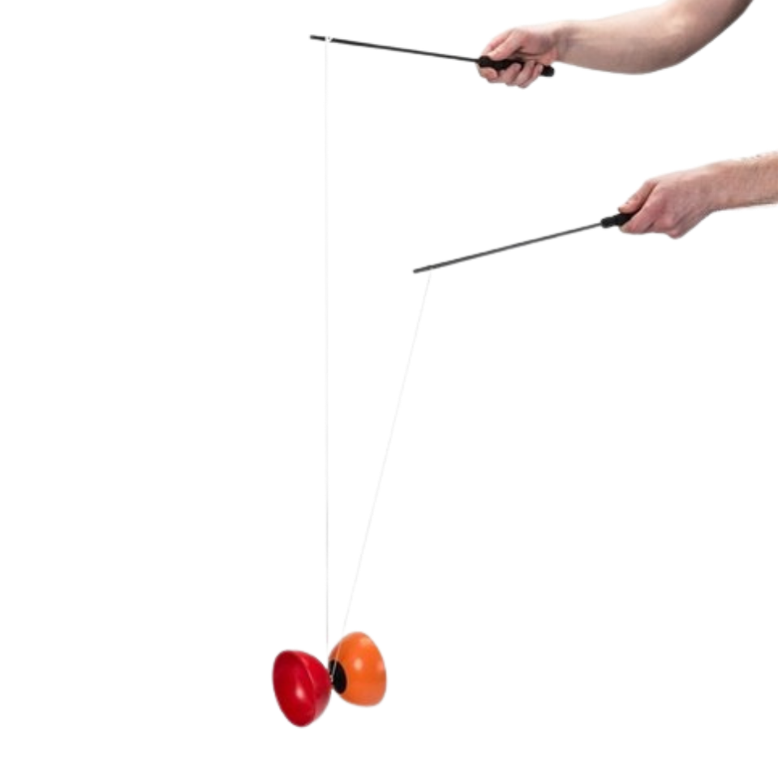

Diabolo
Le sablier volant
Qu'est-ce que le diabolo
L’instrument est composé de manière générale de deux calottes en plastique serties par un boulon à un axe métallique ou en teflon ayant la forme d’une gorge de poulie.
Il est le plus souvent accompagnés de deux baguettes en bois, en aluminium, voire en fibre de carbone ou de verre qui permettent par effet de levier de transmettre des forces importantes au diabolo.
Les baguettes sont reliées par du fil, le plus souvent en nylon et en kevlar pour les diabolos « feu ». Parfois le fil est bouclé sur lui-même et le diaboliste n’a pas de baguettes mais plutôt des gants.
C’est l’effet gyroscopique qui permet de maintenir le diabolo en rotation en équilibre sur le fil.
Il existe des diabolos plus atypiques :- divers types de diabolos inflammables ou de diabolos lumineux ;
- à une seule calotte, plus difficiles à manier et ressemblant à des toupies ;
- dont l’axe est sur roulement à billes, à sens unique…
Niveau
Tous niveaux
Âge minimum
8 ans
Matériel
Baguette et diabolo
Style
équilibre et aérien
